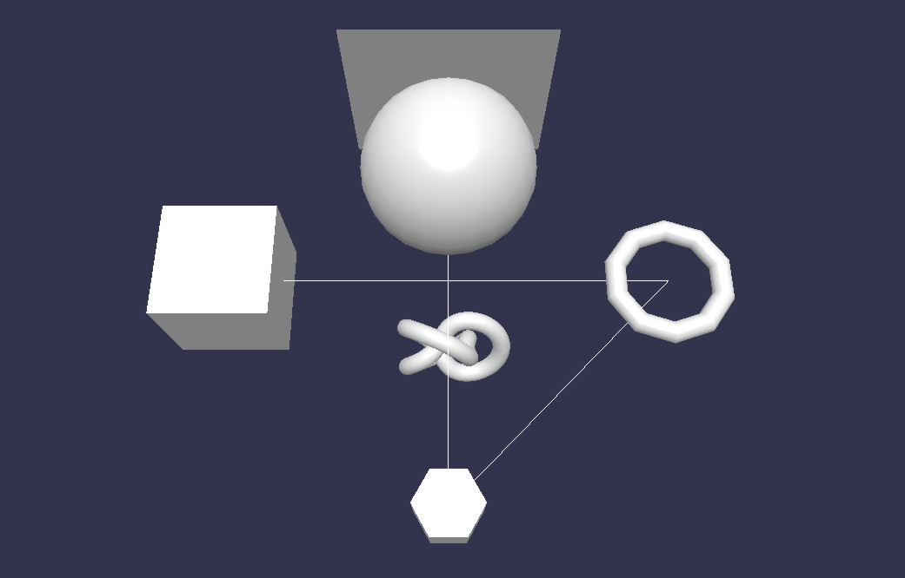

在这篇教程中，我们讲学习怎样使用Babyl.js建立基础图形元素，比如立方体、球体、和平面。

一个简单的开始使用基本图形元素的方法是访问Playground 示例场景02。你可能希望使用顶部菜单中的'Get .zip'选项。你将在那个zip中得到index.html文件，它包含了创建这些基本图形元素所需的所有内容。请记住这个连接，我们以后将会讨论更多关于它的事。
我确定你已经阅读了Babylon.js Primer 以及上一篇教程，因此你知道如何创建场景文件。所以我们不会在这里讨论那些内容，我们将一步一步的研究Playground 示例场景02。在一个新的选项卡或窗口中打开那个连接，然后回到这里，让我们开始
从立方体开始，我们建立一系列的基本图形元素，然后在createScene方法的结尾部分对它们进行定位（让它们上下排列）。现在让我们来研究其中的每一个基本形状/网格。
建立立方体
var box = BABYLON.Mesh.CreateBox("box", 6.0, scene, false, BABYLON.Mesh.DEFAULTSIDE);
参数：网格对象名称，立方体的尺寸，网格所在的场景，是否可以更新？（如果这个网格在后面必须变化）和非必须的属性‘边的朝向’（在稍后详细介绍）。其中最后两个参数可以忽略，如果你只需要默认的行为。
var box = BABYLON.Mesh.CreateBox("box", 6.0, scene);
建立球体
var sphere = BABYLON.Mesh.CreateSphere("sphere", 10.0, 10.0, scene, false, BABYLON.Mesh.DEFAULTSIDE);
参数：名称，圆弧细分度（更高的细节或者相反），尺寸，网格所在的场景，是否可以更新？边的朝向。其中后两个参数可以省略。
var sphere = BABYLON.Mesh.CreateSphere("sphere", 10.0, 10.0, scene);
注意把分段数调整为尺寸大小 ;)
建立平面
var plane = BABYLON.Mesh.CreatePlane("plane", 10.0, scene, false, BABYLON.Mesh.DEFAULTSIDE);
参数：名称，尺寸，网格所在的场景，是否可以更新？边的朝向。其中后两个参数可以省略。
var plane = BABYLON.Mesh.CreatePlane("plane", 10.0, scene);
建立一个圆盘（或者一个正多边形）
var disc = BABYLON.Mesh.CreateDisc("disc", 5, 30, scene, false, BABYLON.Mesh.DEFAULTSIDE);
参数：名称，半径，边数，场景，是否可修改，边朝向。最后两个参数可以省略。
var disc = BABYLON.Mesh.CreateDisc("disc", 5, 30, scene);
通过调整边数值，你可以获得一些正多边形
3 获得一个三角形,
4 一个四边形,
5 一个五边形,
6 一个六边形, 7 一个七边型, 8 一个八变形, 等等.
建立一个圆柱体
var cylinder = BABYLON.Mesh.CreateCylinder("cylinder", 3, 3, 3, 6, 1, scene, false, BABYLON.Mesh.DEFAULTSIDE);
参数：名称，高度，顶部直径，底部直径，边数，高度细分（指椎体情况下的光滑度？），场景，是否可修改，边朝向，最后两个参数可以省略。
var cylinder = BABYLON.Mesh.CreateCylinder("cylinder", 3, 3, 3, 6, 1, scene);
var torus = BABYLON.Mesh.CreateTorus("torus", 5, 1, 10, scene, false, BABYLON.Mesh.DEFAULTSIDE);
参数：名称，直径，厚度，细分度，场景，是否可修改，边朝向。最后两个参数可以省略。
var torus = BABYLON.Mesh.CreateTorus("torus", 5, 1, 10, scene);
var knot = BABYLON.Mesh.CreateTorusKnot("knot", 2, 0.5, 128, 64, 2, 3, scene, false, BABYLON.Mesh.DEFAULTSIDE);
参数：名称，半径，“管”，“径向段数”，“管段数”，p，q，场景，是否可修改，边朝向，最后两个参数可以省略。
var knot = BABYLON.Mesh.CreateTorusKnot("knot", 2, 0.5, 128, 64, 2, 3, scene);
你可以了解更多关于管节的知识通过这里.
var lines = BABYLON.Mesh.CreateLines("lines", [
new BABYLON.Vector3(-10, 0, 0),
new BABYLON.Vector3(10, 0, 0),
new BABYLON.Vector3(0, 0, -10),
new BABYLON.Vector3(0, 0, 10)
], scene);
参数：名称，[用逗号分隔的向量]，场景（在WebGL中向量和点的区别是很模糊的，有的时候向量单纯表示方向，有的时候向量表示空间点相对于原点的位置）
我可以解释这个线网格构造器是如何工作的，但是我认为你只通过阅读上面的示例代码就可以理解它是如何工作的。注意那两个中括号，他们表示了一个数组，这是JavaScript的一种独特的数据类型。其中的第一个vector3对象是画线的起始点，然后一个逗号，然后下一个vector3位置。你可以加入任意多的点，但是请注意最后一个vector3的后面没有逗号。请用类似的方法构造你自己vector3数组。
var dashedlines = BABYLON.Mesh.CreateDashedLines("dashedLines", [v1, v2, ... vn], dashSize, gapSize, dashNb, scene);
参数：名称，vector3数组，短实线尺寸，空白尺寸，短实线数，场景
像上面的线网格一样，一条沿着vector3的线将会被绘制出来。？ 它将试着在每两个连续的点之间的线段上分出“短实线数”段的虚线
短实线尺寸和空白尺寸 是一个相对的比例
你也可能产生兴趣在我们的新线系统.
带状物是什么?
首先，想象一系列连续的点定义了一条路径
然后，想象另一系列连续的点定义了另一条路径。
现在，如果你通过交叉使用两条路径上的点构建三角形， 就像穿鞋带一样，你就得到了一个带状物。（这个与Three.js中的“三角形带”定义不同）
你的路径没有必要并行，
它们甚至不需要在同一个平面内。无论你怎样设定，这个带状物都会忠实的按照设定的路径生成。
现在，想象一下，你不只有两条路径，而是有多条连续的路径。
这样生成的完整的带状物将是由其中的所有的路径组成的面连接起来组成的面。（就像被风吹动的旗帜）
var ribbon = BABYLON.Mesh.CreateRibbon("ribbon", [path1, path2, ..., pathn], false, false, 0, scene, false, BABYLON.Mesh.DEFAULTSIDE);
参数：名称，路径数组，‘关闭数组’，‘关闭路径’，‘偏移’，场景，是否可修改，边朝向。
使用默认行为时最后两个参数可以忽略 :
var ribbon = BABYLON.Mesh.CreateRibbon("ribbon", [path1, path2, ..., pathn], false, false, 0, scene);
如果你需要关于如何使用这个方法的更多细节，你可以阅读参数化形状部分。
var tube = BABYLON.Mesh.CreateTube("tube", [V1, V2, ..., Vn], radius, tesselation, radiusFunction, cap, scene, false, BABYLON.Mesh.DEFAULTSIDE);
参数 : 名称，路径，半径，曲面细分度，可选的半径函数，帽子，场景，是否可修改，边朝向。
使用默认行为时最后两个参数可以忽略 :
var tube = BABYLON.Mesh.CreateTube("tube", [V1, V2, ..., Vn], radius, tesselation, radiusFunction, cap, scene);
管状物也可以被当做参数化形状使用，通过设置半径函数。
这个出现在每一个网格建立方法中的参数，表示网格是否可以在建立之后被修改。
如果为false（默认值），这个网格的数据将只向GPU发送一次。
如果为true，这个网格的数据将在每一帧刷新时被重新计算并发送到GPU。
在一个网格对象被建立时，一个边朝向取向被赋予它。
边朝向被用来设置网格每一面的可见性和/或光反射性。（只绘制一面可以节省性能）
这个参数有四个可能的值 :
这个参数是可选的. 如果没有选, 则使用默认值.
(我们假设材质的backFaceCulling 属性被默认启用了)
例如,想象你建立了一个基本形状比如立方体，球体或者一个平面，并且你没有给他设置材质。
如果你移动到平面的后面或者移动到立方体或球体的里面，你将发现这些面不再可见了：Babylon.js的网格通常是默认使用FRONTSIDE的。这意味着每一面都只能在前面看
在这里尝试一下 : http://www.babylonjs-playground.com/#14RNAU#4 -
如果你为你的网格设置一个测试材质，并设置 material.backFaceCulling = false;, 然后设置好光照，你将发现图形的背面和里面变得可见，但是不能反射光线。原因在于：默认的边朝向仍然是FRONTSIDE.
(你可以覆盖材质的backFaceCulling属性通过设置sideOrientation属性)（注意“网格”指由三角形或四边形构成的形状，“纹理”则是指在形状表面附着的贴图，“材质”指平面对光照的反射程度）
现在，只通过改变 sideOrientation参数为BABYLON.Mesh.BACKSIDE. (同时移除测试材质.) 你将只能看见图形的背面和里面。
在这里尝试一下 : http://www.babylonjs-playground.com/#14RNAU#5 -
如果你给网格设置了材质，你将发现现在光线只在图形的背面和里面反射
(你可以覆盖材质的 backFaceCulling 属性通过设置网格的sideOrientation属性)
最后，修改网格的sideOrientation 参数为BABYLON.Mesh.DOUBLESIDE.
像你预计的一样，现在这个网格的两面都是可见的。并且如果你给他设置一个材质，网格的两面都将可以反射光。
在这里尝试一下 : http://www.babylonjs-playground.com/#14RNAU#6 -
那么为什么不一直使用BABYLON.Mesh.DOUBLESIDE 作为默认值呢?
因为这是将对网格每个表面的顶点进行两次创建。从另一方面讲，你的网格的负载将增大一倍。
(最好不要取消backFaceCulling 通过设置BABYLON.Mesh.DOUBLESIDE值)
到现在，我们已经讨论了在Playground示例场景02中的所有图形元素, 但是仍然有几个重要的网格形状（基本图形元素）没有没包括在这个示例场景中。它们是在Babylon.js中建立“地面”的各种方法。让我们来看一下:
var ground = BABYLON.Mesh.CreateGround("ground", 6, 6, 2, scene);
参数: 名称，宽度，深度，细分度，场景
我们在Playground 示例场景01中使用过一次CreateGround 构造函数，你可以点击链接重温那个示例。
var ground = BABYLON.Mesh.CreateGroundFromHeightMap("ground", "heightmap.jpg", 200, 200, 250, 0, 10, scene, false, successCallback);
参数: 名称，高度图的文件路径，宽度，深度，细分度，最小高度，最大高度，场景，是否可修改，成功后的回调方法
高度图地面并不复杂，但是我们计划专门编写一篇教程来更详细的介绍这个Babylon.js的重要特性。请看这个连接HeightMap 教程 去学习更多关于高度图地面的知识。
感谢论坛用户Kostar111提供的这个方便的平铺地面构造方法。下面是建立一个平铺地面所需的基本代码。
var precision = {
"w" : 2,
"h" : 2
};
var subdivisions = {
'h' : 8,
'w' : 8
};
var tiledGround = BABYLON.Mesh.CreateTiledGround("Tiled Ground", -3, -3, 3, 3, subdivisions, precision, scene, false);
参数: 名称，xmin，zmin，xmax，zmax，地块数，一个地块内的细分度，场景，是否可修改。
Kostar111 大方的给我们提供了一个非常好的平铺地面的使用教程。 点击这里来学习他。在那个连接中Kostar111 周到的解释了平铺地面是怎样工作的，并且提供了一些Babylon.js Playground 中的非常好的使用例子。
就是这样!现在你了解了我们所有的基本图形，以及它们的一些使用方法。保持关注这部分教程以了解最近会添加的新的基本图形元素，你可以在这里了解所有网格构造方法的参数.如果可以，请你自由的想象你自己的基本图形元素，并把你的想法在论坛上分享，帮助我们的基本图形库继续成长。
我们发现，我们需要一点“定位”来确保我们的基本图形元素一个一个的位于它们所应该在的位置上，现在让我们来学习更多关于位置和移动的知识。准备好了？当然！（事实上作者说错了，关于位置和移动的教程是第六篇，下一篇教程讲的是材质）点击这里进入下一篇教程。